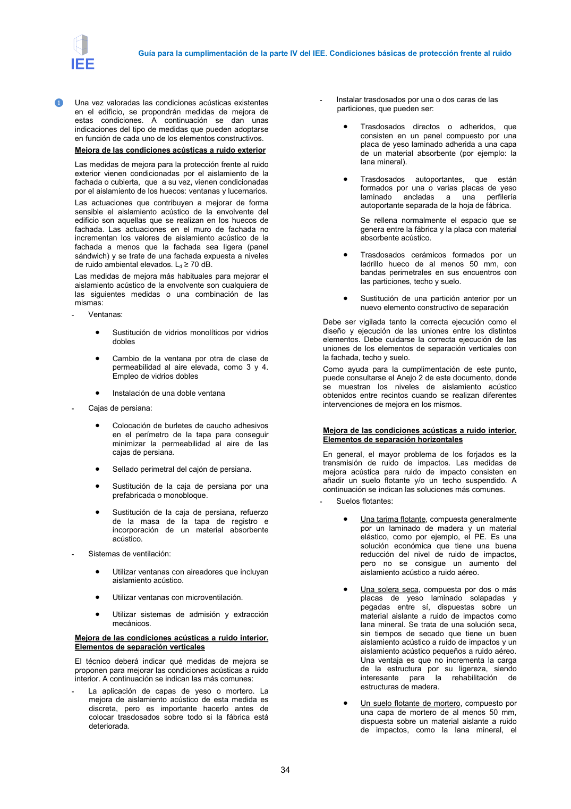
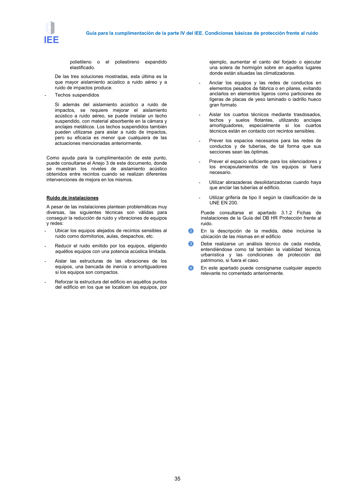
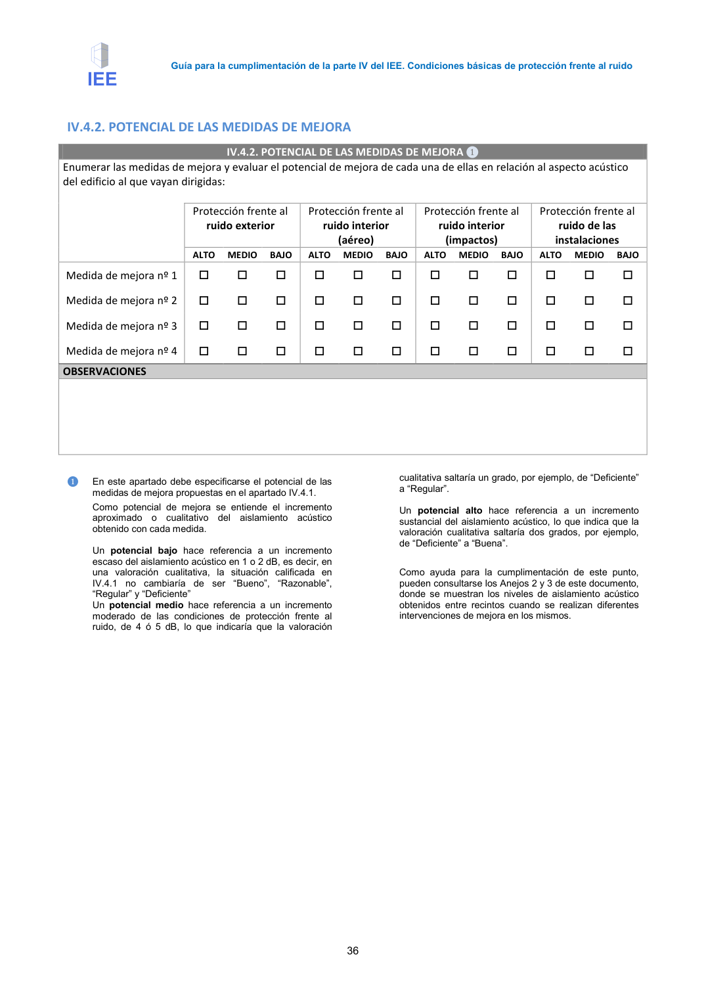

IEE 2016 · edición 2016-11-01 · capa guia
Documento GUIA-PDF-a5d4ef5252ba · SHA-256 del PDF 813669d3066c0ff79457d57b80b0512a4fbb248bc5db1f7baf473c369a064738
Copia fiel del PDF fuente · Fuente oficial
Ficha de la disposición en la fuente oficial
Créditos y autoría en el PDF fuente. Reproducción con cita de fuente y autores.
Permiso literal: Se permite la reproducción del contenido total o parcial de esta Guía siempre y cuando se haga citando la fuente original.
Guía para la cumplimentación de la parte IV del IEE. Condiciones básicas de protección frente al ruido
Dirección y coordinación
Luis Vega Catalán
Mª Cristina Colomo Fernández
Eduardo González de Prado
Dirección General de Arquitectura, Vivienda y Suelo. Ministerio de Fomento
Mª Teresa Carrascal García
Instituto de Ciencias de la Construcción Eduardo Torroja. IETcc- CSIC
Autores
Mª Teresa Carrascal García
Amelia Romero Fernández
Mª Belén Casla Herguedas
Unidad de Calidad en la Construcción del Instituto de Ciencias de la Construcción Eduardo Torroja IETcc- CSIC
Se agradece la colaboración de
Belén Delgado Giménez
Fundación FIDAS
Alberto Esteban González
C.T.O. Estudios y proyectos – Gikesa
Giovanni Muzio
C.T.O. Estudios y proyectos
Francisco Labastida Azemar
Arquitecto, asesor CSCAE
Pedro F. Nogueira López
Universidad de A Coruña
Alejandro Sansegundo Sierra
Acústica SanSegundo
Esta Guía para la cumplimentación de la parte IV del IEE. Condiciones básicas de protección frente al ruido, nace en el marco del
convenio de colaboración llevado a cabo entre el Ministerio de Fomento y el Instituto de Ciencias de la Construcción Eduardo Torroja y
forma parte de la estrategia de este Ministerio de generar una serie de documentos de ayuda que faciliten la aplicación de la normativa
de la edificación y que en este caso concreto, ofrezca a los técnicos criterios para poder realizar una evaluación del estado inicial de las
edificaciones en lo referente a las condiciones acústicas de las viviendas existentes y plantear medidas que incrementen su confort
acústico.
En la redacción de este documento se ha utilizado algunos de los contenidos y de las figuras de la Guía de aplicación del DB HR
Protección frente al ruido. Dicha guía puede consultarse en:
http://www.codigotecnico.org/index.php/menu-documentos-complementarios/menu-guia-aplicacion-db-hr
Se permite la reproducción del contenido total o parcial de esta Guía siempre y cuando se haga citando la fuente original.
2Formatos: JSON del segmento · Markdown
IV.4. RECOMENDACIONES PARA LA MEJORA DE PROTECCIÓN FRENTE AL RUIDO IV.4.1. MEDIDAS DE MEJORA IV.4.1. MEDIDAS DE MEJORA IV.4. RECOMENDACIONES PARA LA MEJORA DE PROTECCIÓN FRENTE AL RUIDO ❶ Como resultado de las valoraciones del edificio realizadas se recomiendas las medidas de mejora siguientes: IV.4.1. MEDIDAS DE MEJORA IV.4.1.1. Medida de mejora nº 1 Descripción de la medida: ❷ Análisis técnico de la medida: ❸ Valoración económica: IV.4.1.2. Medida de mejora nº 2 Descripción de la medida: Análisis técnico de la medida: Valoración económica: IV.4.1.3. Medida de mejora nº 3 Descripción de la medida: Análisis técnico de la medida: Valoración económica: IV.4.1.4. Medida de mejora nº 4 Descripción de la medida: Análisis técnico de la medida: Valoración económica: OBSERVACIONES ❹ Guía para la cumplimentación de la parte IV del IEE. Condiciones básicas de protección frente al ruido 34 ❶ Una vez valoradas las condiciones acústicas existentes en el edificio, se propondrán medidas de mejora de estas condiciones. A continuación se dan unas indicaciones del tipo de medidas que pueden adoptarse en función de cada uno de los elementos constructivos. Mejora de las condiciones acústicas a ruido exterior Las medidas de mejora para la protección frente al ruido exterior vienen condicionadas por el aislamiento de la fachada o cubierta, que a su vez, vienen condicionadas por el aislamiento de los huecos: ventanas y lucernarios. Las actuaciones que contribuyen a mejorar de forma sensible el aislamiento acústico de la envolvente del edificio son aquellas que se realizan en los huecos de fachada. Las actuaciones en el muro de fachada no incrementan los valores de aislamiento acústico de la fachada a menos que la fachada sea ligera (panel sándwich) y se trate de una fachada expuesta a niveles de ruido ambiental elevados. Ld ≥ 70 dB. Las medidas de mejora más habituales para mejorar el aislamiento acústico de la envolvente son cualquiera de las siguientes medidas o una combinación de las mismas: - Ventanas: • Sustitución de vidrios monolíticos por vidrios dobles • Cambio de la ventana por otra de clase de permeabilidad al aire elevada, como 3 y 4. Empleo de vidrios dobles • Instalación de una doble ventana - Cajas de persiana: • Colocación de burletes de caucho adhesivos en el perímetro de la tapa para conseguir minimizar la permeabilidad al aire de las cajas de persiana. • Sellado perimetral del cajón de persiana. • Sustitución de la caja de persiana por una prefabricada o monobloque. • Sustitución de la caja de persiana, refuerzo de la masa de la tapa de registro e incorporación de un material absorbente acústico. - Sistemas de ventilación: • Utilizar ventanas con aireadores que incluyan aislamiento acústico. • Utilizar ventanas con microventilación. • Utilizar sistemas de admisión y extracción mecánicos. Mejora de las condiciones acústicas a ruido interior. Elementos de separación verticales El técnico deberá indicar qué medidas de mejora se proponen para mejorar las condiciones acústicas a ruido interior. A continuación se indican las más comunes: - La aplicación de capas de yeso o mortero. La mejora de aislamiento acústico de esta medida es discreta, pero es importante hacerlo antes de colocar trasdosados sobre todo si la fábrica está deteriorada. - Instalar trasdosados por una o dos caras de las particiones, que pueden ser: • Trasdosados directos o adheridos, que consisten en un panel compuesto por una placa de yeso laminado adherida a una capa de un material absorbente (por ejemplo: la lana mineral). • Trasdosados autoportantes, que están formados por una o varias placas de yeso laminado ancladas a una perfilería autoportante separada de la hoja de fábrica. Se rellena normalmente el espacio que se genera entre la fábrica y la placa con material absorbente acústico. • Trasdosados cerámicos formados por un ladrillo hueco de al menos 50 mm, con bandas perimetrales en sus encuentros con las particiones, techo y suelo. • Sustitución de una partición anterior por un nuevo elemento constructivo de separación Debe ser vigilada tanto la correcta ejecución como el diseño y ejecución de las uniones entre los distintos elementos. Debe cuidarse la correcta ejecución de las uniones de los elementos de separación verticales con la fachada, techo y suelo. Como ayuda para la cumplimentación de este punto, puede consultarse el Anejo 2 de este documento, donde se muestran los niveles de aislamiento acústico obtenidos entre recintos cuando se realizan diferentes intervenciones de mejora en los mismos. Mejora de las condiciones acústicas a ruido interior. Elementos de separación horizontales En general, el mayor problema de los forjados es la transmisión de ruido de impactos. Las medidas de mejora acústica para ruido de impacto consisten en añadir un suelo flotante y/o un techo suspendido. A continuación se indican las soluciones más comunes. - Suelos flotantes: • Una tarima flotante, compuesta generalmente por un laminado de madera y un material elástico, como por ejemplo, el PE. Es una solución económica que tiene una buena reducción del nivel de ruido de impactos, pero no se consigue un aumento del aislamiento acústico a ruido aéreo. • Una solera seca, compuesta por dos o más placas de yeso laminado solapadas y pegadas entre sí, dispuestas sobre un material aislante a ruido de impactos como lana mineral. Se trata de una solución seca, sin tiempos de secado que tiene un buen aislamiento acústico a ruido de impactos y un aislamiento acústico pequeños a ruido aéreo. Una ventaja es que no incrementa la carga de la estructura por su ligereza, siendo interesante para la rehabilitación de estructuras de madera. • Un suelo flotante de mortero, compuesto por una capa de mortero de al menos 50 mm, dispuesta sobre un material aislante a ruido de impactos, como la lana mineral, el Guía para la cumplimentación de la parte IV del IEE. Condiciones básicas de protección frente al ruido 35 polietileno o el poliestireno expandido elastificado. De las tres soluciones mostradas, esta última es la que mayor aislamiento acústico a ruido aéreo y a ruido de impactos produce. - Techossuspendidos Si además del aislamiento acústico a ruido de impactos, se requiere mejorar el aislamiento acústico a ruido aéreo, se puede instalar un techo suspendido, con material absorbente en la cámara y anclajes metálicos. Los techos suspendidos también pueden utilizarse para aislar a ruido de impactos, pero su eficacia es menor que cualquiera de las actuaciones mencionadas anteriormente. Como ayuda para la cumplimentación de este punto, puede consultarse el Anejo 3 de este documento, donde se muestran los niveles de aislamiento acústico obtenidos entre recintos cuando se realizan diferentes intervenciones de mejora en los mismos. Ruido de instalaciones A pesar de las instalaciones plantean problemáticas muy diversas, las siguientes técnicas son válidas para conseguir la reducción de ruido y vibraciones de equipos y redes: - Ubicar los equipos alejados de recintos sensibles al ruido como dormitorios, aulas, despachos, etc. - Reducir el ruido emitido por los equipos, eligiendo aquéllos equipos con una potencia acústica limitada. - Aislar las estructuras de las vibraciones de los equipos, una bancada de inercia o amortiguadores si los equipos son compactos. - Reforzar la estructura del edificio en aquéllos puntos del edificio en los que se localicen los equipos, por ejemplo, aumentar el canto del forjado o ejecutar una solera de hormigón sobre en aquellos lugares donde están situadas las climatizadoras. - Anclar los equipos y las redes de conductos en elementos pesados de fábrica o en pilares, evitando anclarlos en elementos ligeros como particiones de ligeras de placas de yeso laminado o ladrillo hueco gran formato - Aislar los cuartos técnicos mediante trasdosados, techos y suelos flotantes, utilizando anclajes amortiguadores, especialmente si los cuartos técnicos están en contacto con recintos sensibles. - Prever los espacios necesarios para las redes de conductos y de tuberías, de tal forma que sus secciones sean las óptimas. - Prever el espacio suficiente para los silenciadores y los encapsulamientos de los equipos si fuera necesario. - Utilizar abrazaderas desolidarizadoras cuando haya que anclar las tuberías al edificio. - Utilizar grifería de tipo II según la clasificación de la UNE EN 200. Puede consultarse el apartado 3.1.2 Fichas de instalaciones de la Guía del DB HR Protección frente al ruido. ❷ En la descripción de la medida, debe incluirse la ubicación de las mismas en el edificio ❸ Debe realizarse un análisis técnico de cada medida, entendiéndose como tal también la viabilidad técnica, urbanística y las condiciones de protección del patrimonio, si fuera el caso. ❹ En este apartado puede consignarse cualquier aspecto relevante no comentado anteriormente. Guía para la cumplimentación de la parte IV del IEE. Condiciones básicas de protección frente al ruido 36


